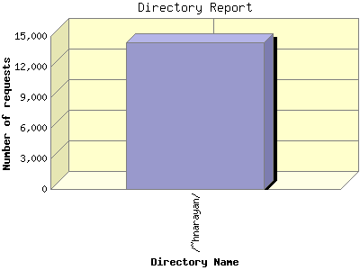

Report generated by Analog 6.0 and Report Magic 2.21
|
Web Server Statistics for "Harish Narayanan (hnarayan) - March 2006" Report generated by Analog 6.0 and Report Magic 2.21 |
The Directory Report analyzes accesses to this web site's directories. This information can be useful in determining the most requested areas.
This report shows all results. This report is sorted by number of requests.

| Directory Name | Number of requests | Percentage of the bytes | |
|---|---|---|---|
| 1. | /~hnarayan/ | 14,397 | 100.00% |
| /~hnarayan/downloads/ | 2,821 | 50.12% | |
| /~hnarayan/downloads/images/ | 982 | 28.32% | |
| /~hnarayan/downloads/talks/ | 1,119 | 11.20% | |
| /~hnarayan/downloads/talks/talk3/ | 184 | 2.40% | |
| /~hnarayan/downloads/talks/talk2/ | 108 | 2.32% | |
| /~hnarayan/downloads/talks/talk7/ | 151 | 1.57% | |
| /~hnarayan/downloads/talks/talk1/ | 177 | 1.45% | |
| /~hnarayan/downloads/talks/talk5/ | 149 | 1.42% | |
| /~hnarayan/downloads/talks/talk4/ | 146 | 1.32% | |
| /~hnarayan/downloads/talks/talk6/ | 141 | 0.73% | |
| /~hnarayan/downloads/posters/ | 274 | 5.91% | |
| /~hnarayan/downloads/posters/poster1/ | 207 | 5.91% | |
| /~hnarayan/downloads/papers/ | 300 | 4.30% | |
| /~hnarayan/downloads/videos/ | 75 | 0.38% | |
| /~hnarayan/site/ | 2,539 | 28.27% | |
| /~hnarayan/site/images/ | 1,364 | 24.65% | |
| /~hnarayan/site/images/smileys/ | 150 | 0.07% | |
| /~hnarayan/site/images/icons/ | 168 | 0.03% | |
| /~hnarayan/site/logs/ | 129 | 1.05% | |
| /~hnarayan/site/broken/ | 36 | 0.06% | |
| /~hnarayan/site/contact.html/ | 6 | 0.00% | |
| /~hnarayan/images/ | 3,944 | 8.59% | |
| /~hnarayan/images/photos/ | 1,489 | 2.50% | |
| /~hnarayan/images/photos/thumbs/ | 1,454 | 2.50% | |
| /~hnarayan/images/slides_alone/ | 833 | 0.15% | |
| /~hnarayan/images/slides_alone/1_files/ | 104 | 0.02% | |
| /~hnarayan/images/slides_alone/3_files/ | 123 | 0.02% | |
| /~hnarayan/images/slides_alone/2_files/ | 69 | 0.02% | |
| /~hnarayan/images/slides_alone/4_files/ | 104 | 0.02% | |
| /~hnarayan/images/slides_alone/7_files/ | 56 | 0.01% | |
| /~hnarayan/images/slides_alone/5_files/ | 80 | 0.01% | |
| /~hnarayan/images/slides_alone/6_files/ | 55 | 0.01% | |
| /~hnarayan/images/tex/ | 87 | 0.02% | |
| /~hnarayan/PS_Screens/ | 309 | 4.39% | |
| /~hnarayan/cgi-data/ | 407 | 1.25% | |
| /~hnarayan/notes.html/ | 382 | 0.95% | |
| /~hnarayan/notes.html/flume_reports/ | 380 | 0.95% | |
| /~hnarayan/notes.html/flume_reports/January_2005/ | 38 | 0.10% | |
| /~hnarayan/notes.html/flume_reports/November_2005/ | 37 | 0.09% | |
| /~hnarayan/notes.html/flume_reports/July_2005/ | 32 | 0.08% | |
| /~hnarayan/notes.html/flume_reports/October_2005/ | 32 | 0.08% | |
| /~hnarayan/notes.html/flume_reports/December_2004/ | 30 | 0.07% | |
| /~hnarayan/notes.html/flume_reports/May_2005/ | 29 | 0.07% | |
| /~hnarayan/notes.html/flume_reports/June_2005/ | 29 | 0.07% | |
| /~hnarayan/notes.html/flume_reports/August_2005/ | 28 | 0.07% | |
| /~hnarayan/notes.html/flume_reports/March_2005/ | 26 | 0.07% | |
| /~hnarayan/notes.html/flume_reports/November_2004/ | 24 | 0.06% | |
| /~hnarayan/notes.html/flume_reports/February_2005/ | 21 | 0.05% | |
| /~hnarayan/notes.html/flume_reports/September_2005/ | 20 | 0.05% | |
| /~hnarayan/notes.html/flume_reports/April_2005/ | 19 | 0.05% | |
| /~hnarayan/notes.html/flume_reports/September_2004/ | 3 | 0.01% | |
| /~hnarayan/notes.html/flume_reports/July_2004/ | 2 | 0.01% | |
| /~hnarayan/notes.html/flume_reports/March_2004/ | 2 | 0.01% | |
| /~hnarayan/notes.html/flume_reports/December_2003/ | 2 | 0.01% | |
| /~hnarayan/notes.html/flume_reports/August_2004/ | 2 | 0.01% | |
| /~hnarayan/notes.html/flume_reports/February_2004/ | 1 | 0.00% | |
| /~hnarayan/notes.html/flume_reports/May_2004/ | 1 | 0.00% | |
| /~hnarayan/notes.html/flume_reports/June_2004/ | 1 | 0.00% | |
| /~hnarayan/notes.html/flume_reports/April_2004/ | 1 | 0.00% | |
| /~hnarayan/research-new.html/ | 1 | 0.00% | |
This report was generated on April 27, 2006 10:40.
Report time frame March 1, 2006 00:07 to March 31, 2006 23:55.
| Web statistics report produced by: | |
 Analog 6.0 Analog 6.0 |  Report Magic 2.21 Report Magic 2.21 |